BACK DOOR > DISASSEMBLY |
| 1. DISCONNECT CABLE FROM NEGATIVE BATTERY TERMINAL |
| 2. REMOVE BACK DOOR GRIP |
 |
Remove the 2 screws and back door grip.
| 3. REMOVE LOWER BACK DOOR STOPPER CUSHION |
Remove the 4 bolts and 2 lower back door stopper cushions.
| 4. REMOVE CENTER BACK DOOR GARNISH |
 |
Detach the 5 clips and 2 claws, and remove the back door garnish.
| 5. REMOVE CENTER STOP LIGHT ASSEMBLY |
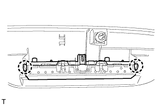 |
Detach the 2 claws and remove the stop light.
| 6. REMOVE BACK DOOR SIDE GARNISH LH |
 |
Detach the 3 clips and remove the back door side garnish.
| 7. REMOVE BACK DOOR SIDE GARNISH RH |
| 8. REMOVE ASSIST GRIP (for Face to Face Seat Type) |
 |
Remove the 2 screws and assist grip.
| 9. REMOVE NO. 2 BACK DOOR SERVICE HOLE COVER (for Face to Face Seat Type) |
 |
Using a screwdriver, detach the 4 claws and remove the back door service hole cover.
Disconnect connector.
| 10. REMOVE POWER BACK DOOR MAIN SWITCH (for Face to Face Seat Type) |
 |
Detach the 2 claws and remove the power back door main switch.
| 11. REMOVE BACK DOOR GARNISH |
 |
Using a screwdriver, detach the 14 clips and remove the back door garnish.
| 12. REMOVE REAR ASSIST GRIP REINFORCEMENT (for Face to Face Seat Type) |
 |
Remove the 3 bolts.
Detach the 2 claws and remove the rear assist grip reinforcement.
| 13. REMOVE REAR WIPER ARM (w/ Rear Wiper) |
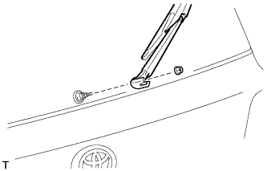 |
Open the cover.
Remove the nut and rear wiper arm.
| 14. REMOVE REAR WIPER MOTOR GROMMET (w/ Rear Wiper) |
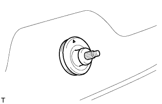 |
Detach the wiper motor grommet.
| 15. REMOVE REAR WIPER MOTOR ASSEMBLY (w/ Rear Wiper) |
 |
Disconnect the connector.
Remove the 3 bolts and rear wiper motor assembly.
| 16. REMOVE BACK DOOR LOCK COVER |
 |
Detach the 4 claws and remove the back door lock cover.
| 17. REMOVE BACK DOOR LOCK ASSEMBLY |
 |
Disconnect the connector.
Remove the 3 bolts and back door lock.
| 18. REMOVE LICENSE PLATE LIGHT LENS (for Standard) |
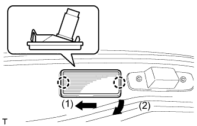 |
Detach the 2 claws in the order shown in the illustration and remove the license plate light.
Disconnect the connector.
| 19. REMOVE BACK DOOR OPENER SWITCH ASSEMBLY |
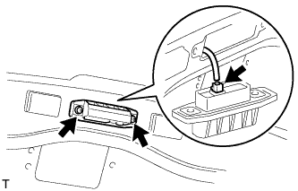 |
Remove the 2 screws.
Disconnect the connector and then remove the back door opener switch.
| 20. REMOVE REAR TELEVISION CAMERA ASSEMBLY (w/ Parking Assist Monitor System or Rear Veiw Monitor System) |
 |
Using a T30 "TORX" socket wrench, remove the 2 screws.
 |
Detach the 4 claws and remove the rear television camera assembly.
Disconnect the connector.
| 21. REMOVE LIFT GATE WEATHERSTRIP |
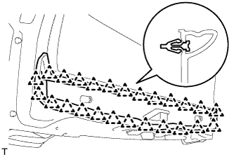 |
Detach the 25 clips and remove the lift gate weatherstrip.
| 22. REMOVE LOWER BACK DOOR STOPPER |
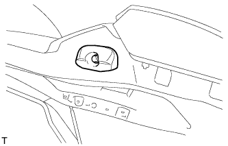 |
Remove the bolt and lower back door stopper.
| 23. REMOVE BACK DOOR GARNISH SUB-ASSEMBLY OUTSIDE |
Put protective tape around the back door garnish.
Detach the 4 clips and remove the double-sided tape to remove the back door garnish.
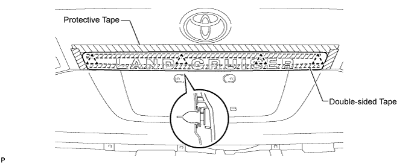
| 24. REMOVE REAR SPOILER SUB-ASSEMBLY (w/ Rear Spoiler) |
 |
Remove the 4 bolts.
 |
Detach the 3 clips and remove the rear spoiler.
| 25. REMOVE REAR WASHER NOZZLE (w/ Rear Wiper) |
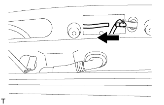 |
Detach the hose.
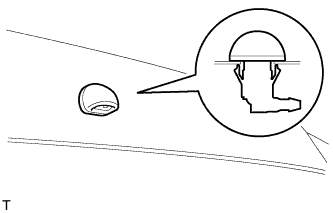 |
Detach the 2 claws and remove the washer nozzle.
| 26. REMOVE BACK DOOR STAY ASSEMBLY LH |
 |
Remove the 2 bolts and stay.
 |
Remove the bolt and stay.
| 27. REMOVE BACK DOOR STAY ASSEMBLY RH |
| 28. REMOVE REAR FLOOR MAT REAR SUPPORT PLATE |
 |
Detach the 6 clips and remove the support plate.
| 29. REMOVE BACK DOOR TRIM COVER LH |
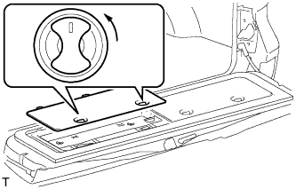 |
Remove the back door trim cover LH as shown in the illustration.
| 30. REMOVE BACK DOOR TRIM COVER RH |
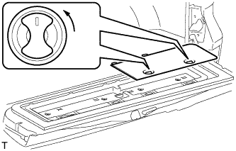 |
Remove the back door trim cover RH as shown in the illustration.
| 31. REMOVE BACK DOOR TRIM PANEL ASSEMBLY |
 |
Remove the 4 bolts.
Detach the 16 clips and remove the back door trim panel.
| 32. REMOVE NO. 2 BACK DOOR GARNISH SUB-ASSEMBLY OUTSIDE (w/ Tire Carrier) |
| 33. REMOVE LICENSE PLATE LIGHT ASSEMBLY (w/ Tire Carrier) |
| 34. REMOVE REAR LICENSE LIGHT COVER (w/ Tire Carrier) |
| 35. REMOVE REAR BUMPER COVER |
for Standard:
Remove the bumper cover (Click here).
w/ Towing Hitch:
Remove the bumper cover (Click here)
w/ Pintle Hook:
Remove the bumper cover (Click here)
| 36. REMOVE SPARE TIRE |
| 37. REMOVE LOWER BACK DOOR TORSION BAR ASSEMBLY |
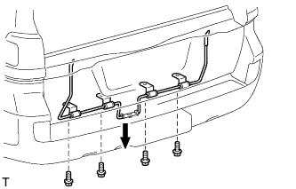 |
Remove the 4 bolts and lower back door torsion bar.
| 38. REMOVE BACK DOOR TORSION BAR GUIDE |
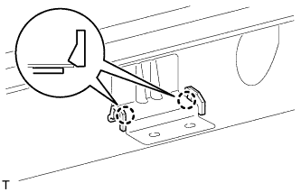 |
Detach the 2 claws and remove the back door torsion bar guide.
| 39. REMOVE BACK DOOR INSIDE HANDLE ASSEMBLY |
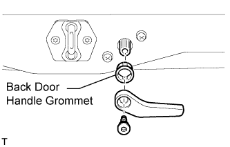 |
Remove the screw and back door inside handle.
Remove the back door handle grommet.
| 40. REMOVE LOWER TAIL GATE LOCK ASSEMBLY RH |
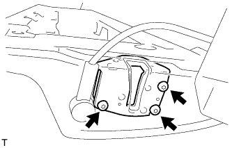 |
Using a T30 "TORX" wrench, remove the 3 screws and lower tail gate lock.
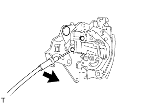 |
Disconnect the cable from the the lower tail gate lock.
| 41. REMOVE BACK DOOR REMOTE CONTROL ASSEMBLY |
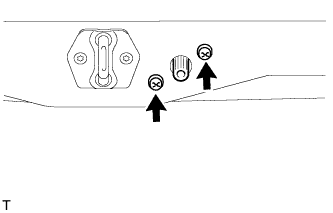 |
Remove the 2 screws.
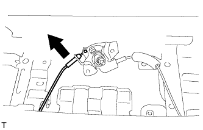 |
Disconnect the left side cable.
Remove the back door remote control.
| 42. REMOVE LOWER TAIL GATE LOCK ASSEMBLY LH |
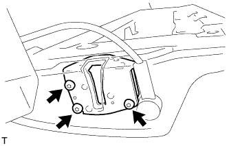 |
Using a T30 "TORX" wrench, remove the 3 screws and lower tail gate lock.
| 43. REMOVE TAIL GATE STAY SUB-ASSEMBLY LH |
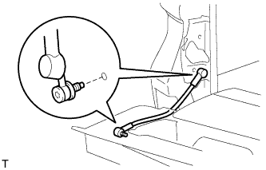 |
Using a T40 "TORX" socket, remove the 2 screws and tail gate stay.
| 44. REMOVE TAIL GATE STAY SUB-ASSEMBLY RH |